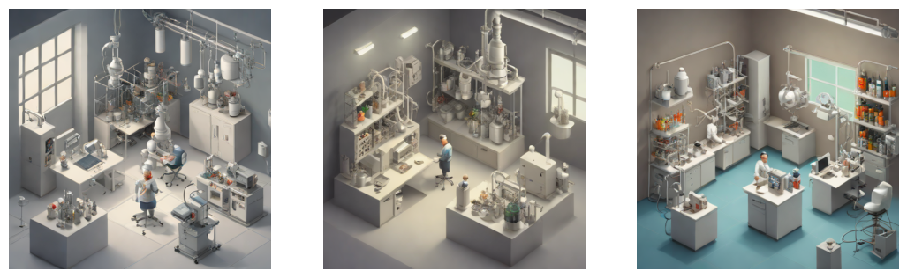

Code
#### If you don't already have the libraries that will be imported in this notebook, you can uncomment the line below to install them
# %pip install torch numpy matplotlib transformers diffusers acceleratetransformers and diffusers by HuggingFace on a Macbook using the onboard GPU.
Colin Kinz-Thompson
December 11, 2023
## A lot of models on hugging face are in PyTorch
import torch
### This bit of code determines whether you have an NVIDIA gpu or you want to use the mac silicon GPU.
if torch.cuda.is_available():
device = "cuda:0"
elif torch.backends.mps.is_available():
device = torch.device("mps")
else:
device = "cpu"
## Other imports
import numpy as np
import matplotlib.pyplot as plt
import warnings
warnings.filterwarnings('ignore')These are the blenderbot models developed by facebook. The following code shows directly using the model and tokenizer objects.
My dog is cute. Why don't you agree?
> i don't know, i guess it's just that i've never had a dog before.from transformers import BlenderbotTokenizer, BlenderbotForConditionalGeneration
modelname = "facebook/blenderbot-400M-distill"
# modelname = "facebook/blenderbot-1B-distill"
# modelname = "facebook/blenderbot-3B" ## a little too large for my laptop
tokenizer = BlenderbotTokenizer.from_pretrained(modelname)
model = BlenderbotForConditionalGeneration.from_pretrained(modelname).to(device)My dog is cute. Why don't you agree?
> I love dogs, but I'm allergic to them. What kind of dog do you have?The following uses the stable diffusion quick rendering model. The code demonstrates the use of a pipeline aproach
Loading pipeline components...: 100%|███████████████████████████████████████████████████████████████| 7/7 [00:00<00:00, 15.75it/s]prompt = "isometric science laboratory, chemistry, biology, NMR, sci-fi, 3d art, muted colors, soft lighting, ray tracing"
negprompt = 'doctor, medicine, dentist, office'
imgs = []
for _ in range(3):
image = pipe(prompt=prompt, negative_prompt=negprompt, num_inference_steps=2, strength=0.9, guidance_scale=0.0).images[0]
imgs.append(image)
fig,ax=plt.subplots(1,len(imgs),figsize=(13,4))
[ax[i].imshow(imgs[i]) for i in range(len(imgs))]
[aa.axis('off') for aa in ax]
plt.show()100%|███████████████████████████████████████████████████████████████████████████████████████████████| 2/2 [00:03<00:00, 1.54s/it]
100%|███████████████████████████████████████████████████████████████████████████████████████████████| 2/2 [00:02<00:00, 1.30s/it]
100%|███████████████████████████████████████████████████████████████████████████████████████████████| 2/2 [00:08<00:00, 4.25s/it]